HIST 270 · History of China · Chapter 18 · Lecture 4
The Empress and the Boxers
Cixi, the Lost Wars with France and Japan, the Hundred Days, and the Boxer Uprising
1875–1901 · Study Buddy edition
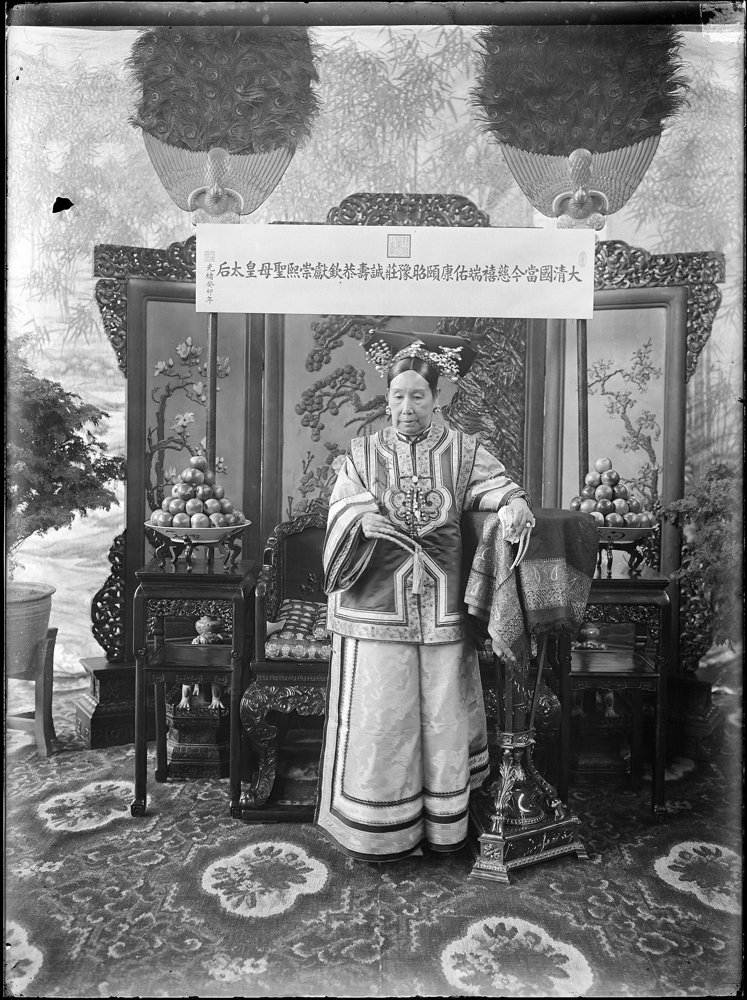
The Empress Dowager Cixi, photographed by the court photographer Xunling, 1903. Freer Gallery of Art and Arthur M. Sackler Gallery Archives. Public domain, Wikimedia Commons.
Q10 story · Beijing · June 1900
In June 1900 the Empress Dowager Declared War on Eight Foreign Powers at Once
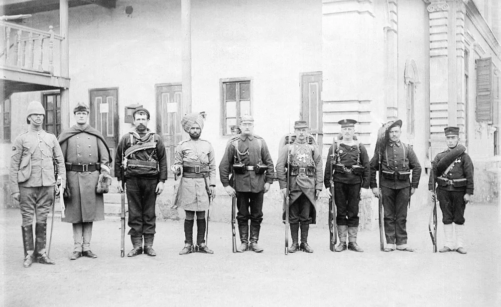
Soldiers of the foreign forces at Tianjin in 1900. From left: British, American, Australian, Indian, German, French, Austro-Hungarian, Italian, and Japanese (Russia is not shown). Photograph probably by the German officer Franz Scholz. Public domain, Wikimedia Commons.
In June 1900 armed bands called Boxers were attacking foreigners and Chinese Christians around Beijing.
Foreign troops seized the Dagu forts, and the German minister was shot dead in the street.
Cixi declared war on all eight powers at once.
How did one woman come to make that choice?
Sources: Ebrey, Ch. 18, pp. 329–330; the Dagu forts (Esherick, 1987). Image: probably Franz Scholz, 1900.
Recap · Self-strengthening
Recap: After 1861 Reformers Built Arsenals, Schools, and a Navy
In 1861 Cixi and Ci'an became regents for her young son, with Prince Gong as chief minister · Ch. 18 L3 · regency-1861 ↗
Sources: Ebrey, Ch. 18, pp. 324, 325; Guangxu as Cixi's nephew (Ebrey, p. 324 caption). Image: Qing court painter.
Q10 concept · Regent and empress dowager
Concept: An Empress Dowager Could Rule as Regent for a Child Emperor
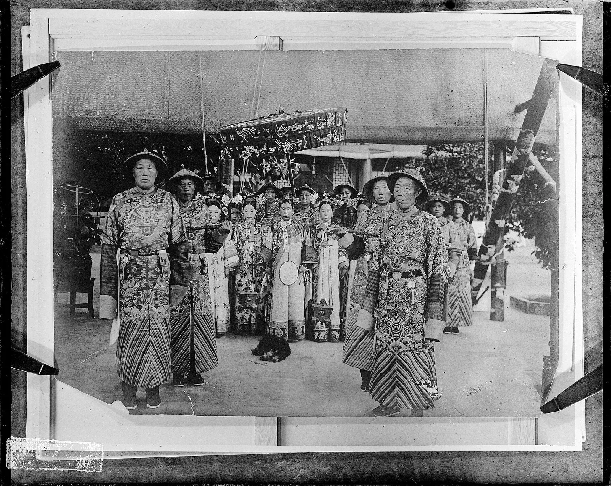
Cixi with court ladies and eunuchs in front of the Hall of Benevolence and Longevity at the Summer Palace, about 1903. Photograph by Xunling. Freer Gallery of Art and Arthur M. Sackler Gallery Archives. Public domain, Wikimedia Commons.
Concept
Regent · Empress Dowager
A regent rules for a monarch who is too young or unable to rule. An empress dowager is the mother of a reigning emperor, honored above everyone at court except the emperor himself.
As the emperor's mother, Cixi held the highest rank at court.
As regent, she read state papers and made appointments for a child emperor.
Qing custom said women should not rule, so she listened from behind a screen.
Sources: Ebrey, Ch. 18, pp. 322, 324; the screen behind the throne (Rawski, 1998). Image: Xunling, about 1903.
Q10 story · Cixi's politics
Cixi Defended Manchu Privilege and Played Reformers Against Their Conservative Critics
The Manchu establishment feared it was being pushed aside by Chinese officials like Li Hongzhang.
Cixi presented herself as a staunch defender of Manchu privileges.
She needed modernizers like Li and rewarded them with titles and honors.
But she kept them in check by also encouraging their conservative critics.
Sources: Ebrey, Ch. 18, p. 324.
Q11 concept · Tributary state
Concept: Korea, the Ryukyus, and Vietnam Were Loyal Tributary States of the Qing
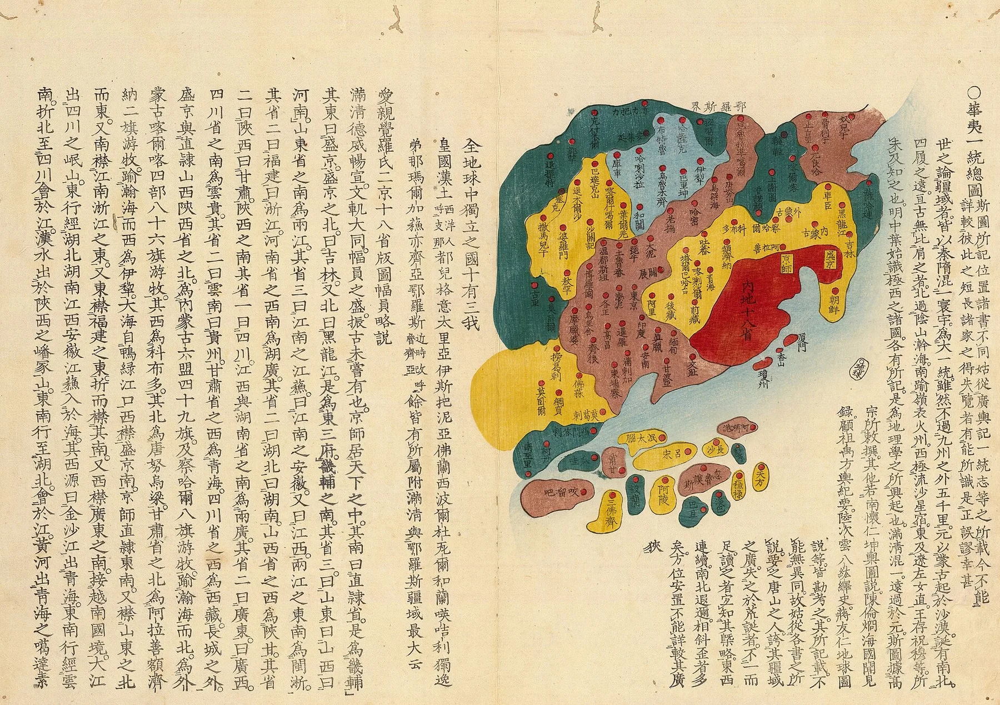
A Japanese map of the Qing empire and its tributaries, including Korea, the Ryukyu Islands, and Vietnam, by Tōjō Kindai, 1848. Public domain, Wikimedia Commons.
Concept
Tributary State
A neighboring kingdom that ruled itself but sent regular missions with gifts to the Chinese emperor, accepted his calendar and his recognition of its kings, and received gifts and trade in return.
Under Cixi, the old tribute system was finally dismantled.
Sources: Ebrey, Ch. 18, p. 324; Ch. 14 L2 and Ch. 16 L3 for the tribute order. Image: Tōjō Kindai, 1848.
Q11 story · The Ryukyus and Vietnam · 1870s–1880s
Japan Took the Ryukyu Islands in the 1870s, and France Moved on Vietnam
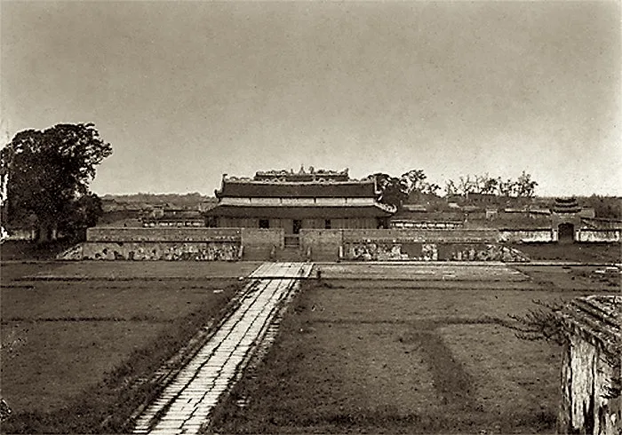
The Kinh Thien palace in the citadel of Hanoi, built on Chinese models, photographed by the French army doctor Charles-Édouard Hocquard, 1884–1885. Public domain, Wikimedia Commons.
In the 1870s Japan forced the Ryukyu Islands away from China.
Vietnam's government was closely modeled on China's, with Confucian teachings and examinations.
France gained privileges in Vietnam by treaty in 1874 and seized Hanoi in 1882.
Li and Prince Gong Urged Peace, but Cixi Sided with the Hard-Liners
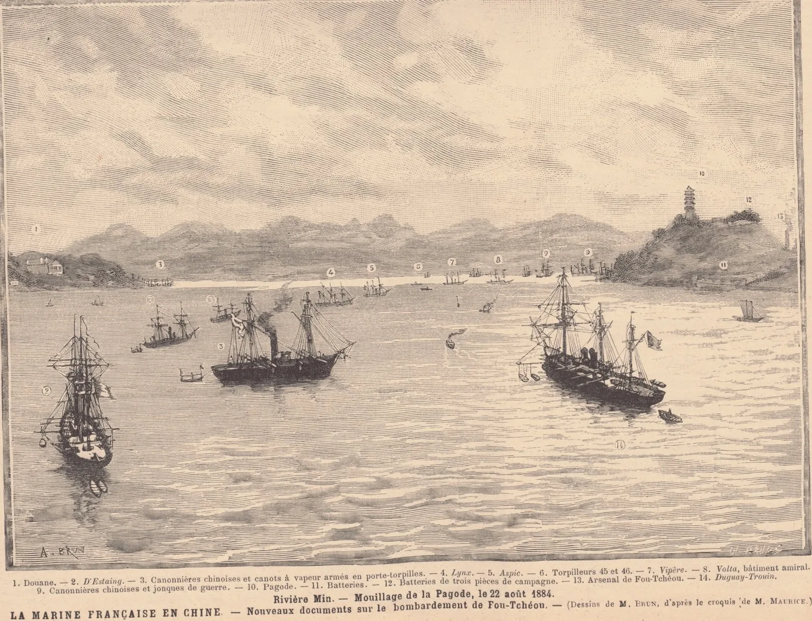
French and Chinese warships anchored together on the Min River below Fuzhou on 22 August 1884, the day before the battle. French newspaper engraving, 1884. Public domain, Wikimedia Commons.
Realists like Prince Gong and Li Hongzhang urged the court to avoid war.
A shrill group of conservative critics insisted China must stop giving in.
Cixi hesitated, let Li negotiate, then scuttled the draft treaty after protests.
When France issued an ultimatum, Cixi sided with the hard-liners, and war began.
Sources: Ebrey, Ch. 18, p. 324; Prince Gong's dismissal in 1884 (Eastman, 1967). Image: French newspaper engraving, 1884.
Q10 story · Fuzhou · 23 August 1884
In Half an Hour the French Fleet Destroyed China's Fuzhou Squadron and Shelled Its Shipyard
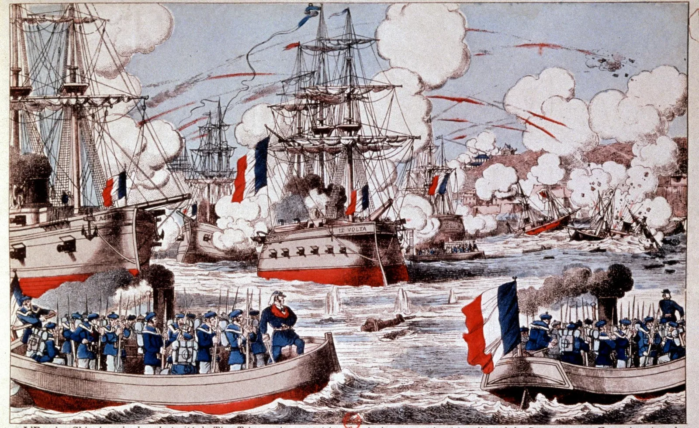
The French bombardment of the Fuzhou arsenal and fleet, a French popular print, 1884. Public domain, Wikimedia Commons.
The French fleet sailed 20 miles up the Min River to Fuzhou, home of the main shipyard.
On 23 August 1884, in about half an hour, it sank nine of the squadron's eleven warships and shelled the shipyard.
Hundreds of Chinese sailors were killed.
Li Hongzhang had disobeyed Cixi's order to send his northern fleet to help.
Sources: Ebrey, Ch. 18, p. 324; the squadron's eleven warships, the length of the action, and the death toll (Elleman, 2001). Image: French popular print, 1884.
Reading Guide · Review Question 10
Reading Guide · Review Question 10
Review Question 10
How did Empress Dowager Cixi shape Qing politics during the late nineteenth century, and what role did she play in balancing reform and conservatism?
In 1894 a Rising in Korea Drew China and Japan into War
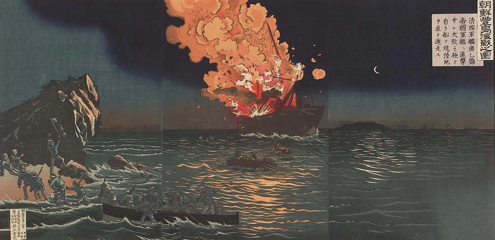
The naval battle off Pungdo, Korea, July 1894, the first clash of the war, in a Japanese woodblock print of the same year. Public domain, Wikimedia Commons.
Japan had modernized so successfully that it now threatened China.
When an insurrection broke out in Korea in 1894, both China and Japan sent troops.
Japan sank a steamship carrying Chinese troops, and both countries declared war.
Korea, China's most loyal tributary, was the prize.
Sources: Ebrey, Ch. 18, p. 326; the Donghak rising and the Kowshing (Paine, 2003). Image: Japanese woodblock print, 1894.
Q11 story · Off the Yalu River · September 1894
Off the Yalu River, China Lost Five Ships and Japan Lost None
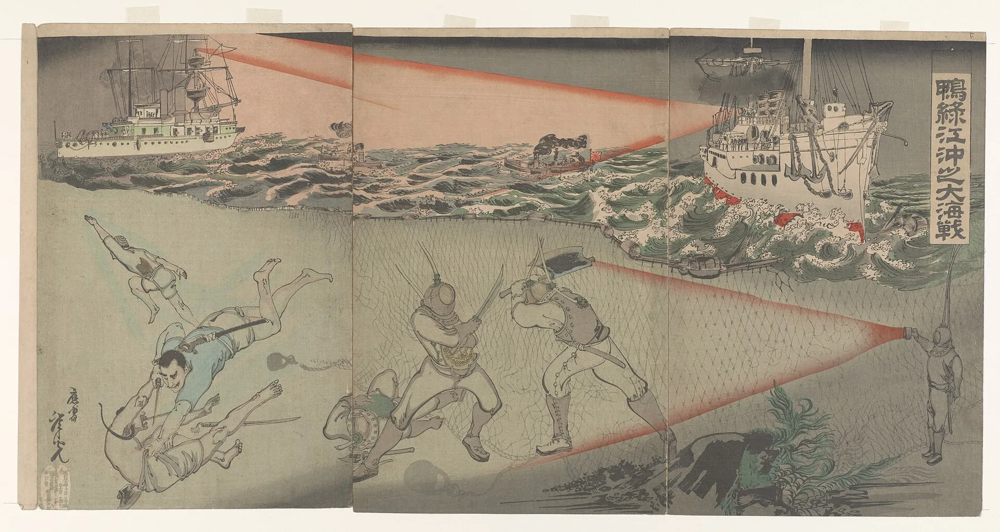
The battle off the Yalu River, September 1894, in a Japanese woodblock triptych by Fukushima Toshimitsu, 1894. Public domain, Wikimedia Commons.
The war tested the Beiyang fleet that Li Hongzhang had built.
In the main naval battle, off the Yalu River, twelve ships fought on each side.
Five Chinese ships were sunk or ran aground and burned; the rest withdrew to port.
No Japanese ship was sunk, though Chinese shells wrecked the Japanese flagship.
Sources: Ebrey, Ch. 18, p. 326; the date and the ships lost and damaged (Paine, 2003; Evans and Peattie, 1997). Image: Fukushima Toshimitsu, 1894.
Q11 story · Weihaiwei, Shandong · February 1895
At Weihaiwei the Japanese Took the Forts and Turned China's Own Guns on Its Fleet
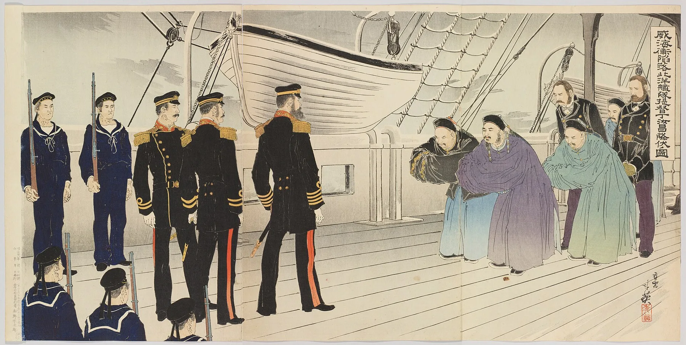
The surrender of the Chinese fleet at Weihaiwei, February 1895, in a Japanese woodblock triptych by Migita Toshihide, 1895. Public domain, Wikimedia Commons.
The Japanese went overland to take the port of Weihaiwei in Shandong.
They turned the forts' Chinese guns on the Chinese fleet in the bay.
The fleet surrendered, and its admiral took his own life.
The textbook calls it a defeat not of weapons but of organization and strategy.
Sources: Ebrey, Ch. 18, p. 326; the surrender and Admiral Ding Ruchang (Paine, 2003). Image: Migita Toshihide, 1895.
Q11 story · Shimonoseki, Japan · April 1895
In 1895 Li Hongzhang Signed a Peace That Gave Japan Taiwan and a Huge Indemnity
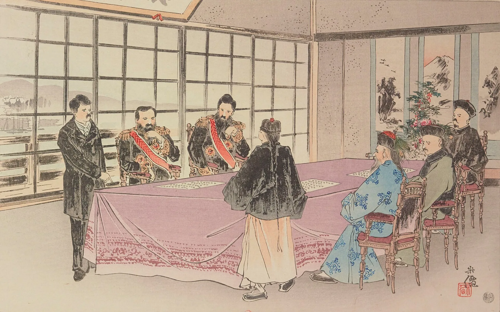
The signing of the peace treaty at Shimonoseki, April 1895, in a Japanese painting of 1896. Public domain, Wikimedia Commons.
China sued for peace and sent Li Hongzhang to Japan to negotiate.
China ceded Taiwan and paid an indemnity of 200 million ounces of silver.
Japan also won Liaodong, which it returned under European pressure for a further 30 million.
China borrowed from foreign banks to pay, and stayed in debt to them until 1949.
Sources: Ebrey, Ch. 18, pp. 325–326; the treaty's name and Korea's independence (Paine, 2003). Image: Japanese painting, 1896.
Q11 story · The scramble for concessions · 1898
In 1898 the Powers Rushed to Grab Ports, and China Seemed About to Be Carved Up
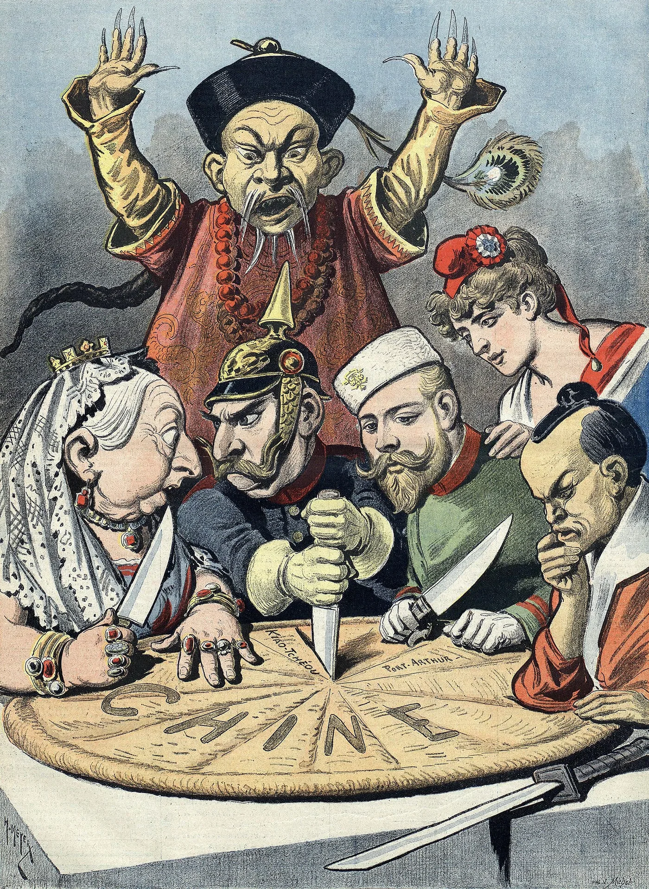
"China: the cake of kings and emperors," a cartoon by Henri Meyer in the French paper Le Petit Journal, 16 January 1898. Queen Victoria, Kaiser Wilhelm II, Tsar Nicholas II, France, and Japan carve up China. Public domain, Wikimedia Commons.
China's helplessness set off a scramble among the powers for concessions.
Russia got a railway across Manchuria and a lease on the Liaodong Peninsula.
Germany seized Qingdao in Shandong, and Britain took Weihaiwei.
France took concessions in the south, near its colonies.
Sources: Ebrey, Ch. 18, pp. 326–327; the 1896–1897 moves (Esherick, 1987; Bickers, 2011). Image: Henri Meyer, Le Petit Journal, 1898.
Q11 evidence · Reparations, 1842–1901
The Loser Pays: Each Defeat Cost China More Silver
Each war or incident ended with a payment; here are the largest, in ounces (taels) of silver unless noted.
1842
21 million silver dollars (about 15 million ounces) to Britain, after the Opium War
1860
16 million to Britain and France, after the attack on Beijing
1895
200 million to Japan, after the Sino-Japanese War
1895
30 million more to Japan, for returning Liaodong
1901
450 million to the eight powers, after the Boxer war
Sources: Ebrey, Ch. 18, pp. 317, 325 (table, Reparations Imposed on China); the corrected units and dates (Hsü, 2000; Paine, 2003).
Reading Guide · Review Question 11
Reading Guide · Review Question 11
Review Question 11
How did foreign imperialism and the loss of tributary states such as Vietnam and Korea demonstrate the declining international position of Qing China?
Answer in two parts: first the loss of the tributary states, then the wider evidence of China's decline: defeats, lost land, indemnities, and the scramble.
Japan, modernizing in the same years, beat China in 1895.
In China, conservatives thought copying the West only made defeat worse.
Even reformers like Zeng Guofan had little respect for merchants and profit-seeking.
Sources: Ebrey, Ch. 18, p. 323; Ch. 18 L3 for the projects.
Q9 story · Beijing · 1867
A High Official, Woren, Said Mathematics Had Never Saved a Dynasty
In 1867 the court planned to teach mathematics and astronomy at the interpreters' college in Beijing.
The high official Woren objected that no one had ever used mathematics to save a declining nation.
Many scholars agreed and refused to enroll.
"From ancient down to modern times" there had never been "anyone who could use mathematics to raise a nation from a state of decline or to strengthen it in times of weakness."
Woren, 1867, as quoted in Ebrey, p. 323
Sources: Ebrey, Ch. 18, p. 323; the date and Woren's office (Wright, 1957).
Q9 story · London and Beijing · 1877–1879
China's First Ambassador to Britain Praised Its Parliament, and the Court Destroyed His Diary
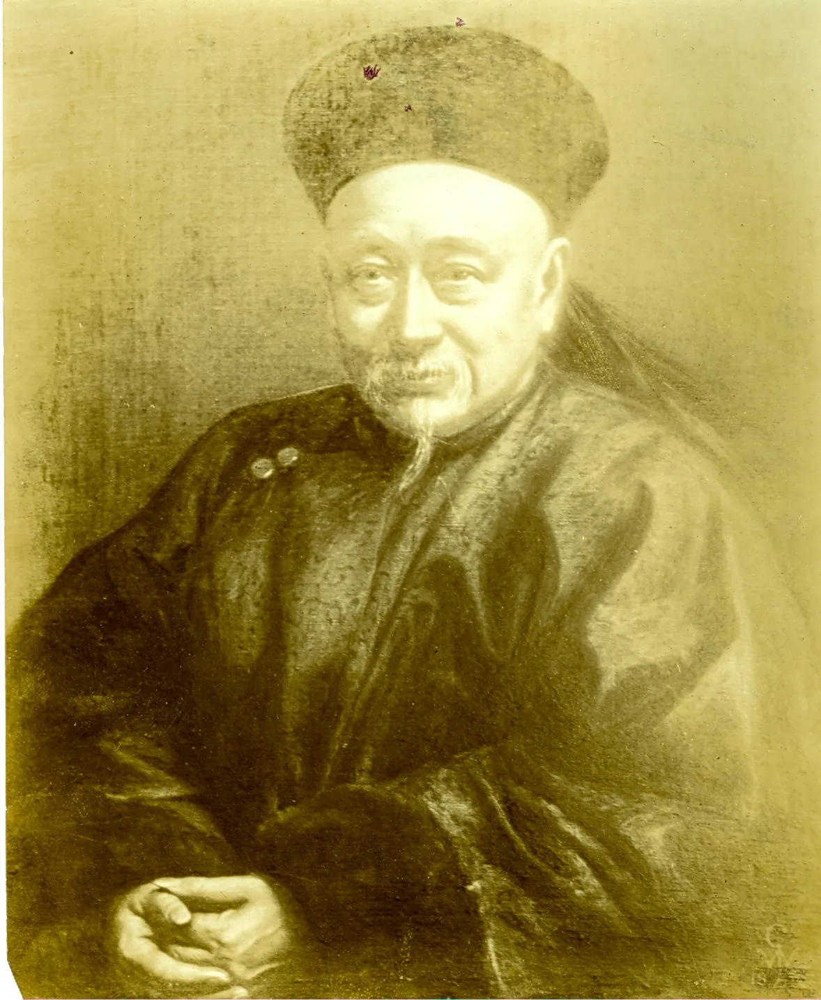
Guo Songtao, China's first ambassador to Britain, painted in London by Walter Goodman in 1877. Private collection. Public domain, Wikimedia Commons.
Guo Songtao served as China's first ambassador to Britain, 1877–1879.
From London he wrote to Li Hongzhang praising Britain's parliament and its industries.
At home he was treated as a man no one should be seen with.
In 1877, while he was still in London, the court ordered the printing blocks for his diary destroyed.
Sources: Ebrey, Ch. 18, pp. 323–324; the date of the order (Frodsham, 1974). Image: Walter Goodman, 1877.
Q9 story · Why reform fell short
The Court Never Wanted Fundamental Change, so the Reforms Never Went Deep Enough
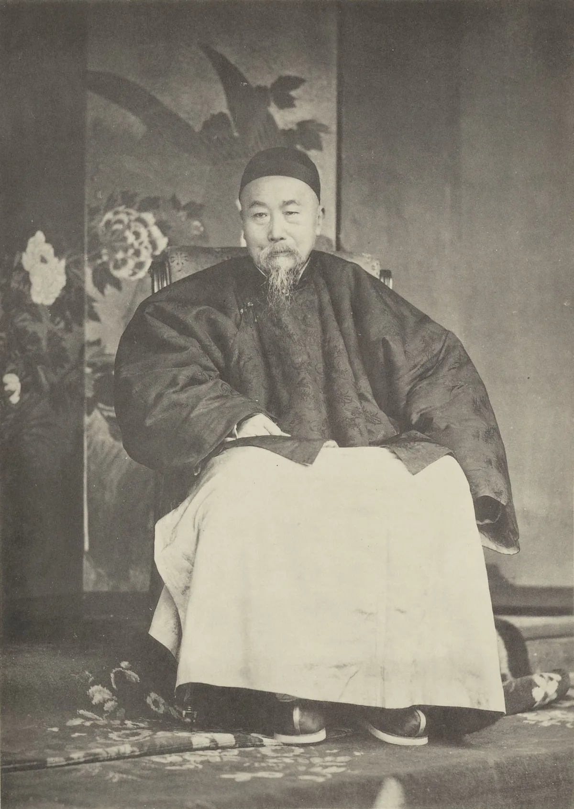
Li Hongzhang at Shimonoseki in 1895, photographed by Ogawa Kazumasa after recovering from an assassin's bullet. Public domain, Wikimedia Commons.
The court never became enthusiastic about fundamental change.
Most in power feared new schools and armies would undermine old values and their own power.
Each humiliation brought rancor and attacks on the men in power.
The reforms were never fundamental enough, and defeat came from organization, not weapons.
In 1895 Kang Youwei Led Examination Candidates in a Petition for an Elected Assembly
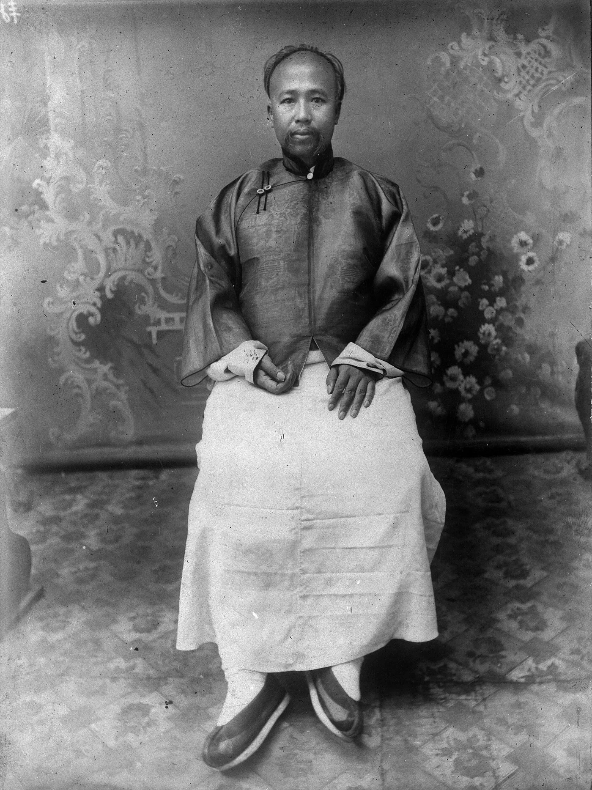
Kang Youwei in exile, about 1905. Los Angeles Times photographic archive, UCLA Library. CC BY 4.0, Wikimedia Commons.
Defeat by Japan stirred fear and outrage that can be called nationalism.
Kang Youwei, a Confucian scholar, argued that Confucius himself had been a reformer.
In 1895 about six hundred candidates signed his petition for an elected assembly, but it never reached the throne.
With "400 million minds as one mind," he wrote, how could the empire fail to be strong?
Sources: Ebrey, Ch. 18, pp. 326–327, quoting Philip A. Kuhn, Origins of the Modern Chinese State (2002); the signers and the fate of the petition (Huang, 1970; Mao, 2005). Image: Los Angeles Times, about 1905.
Q10 story · Beijing · June–September 1898
In 1898 the Guangxu Emperor Issued More Than a Hundred Reform Decrees in a Hundred Days
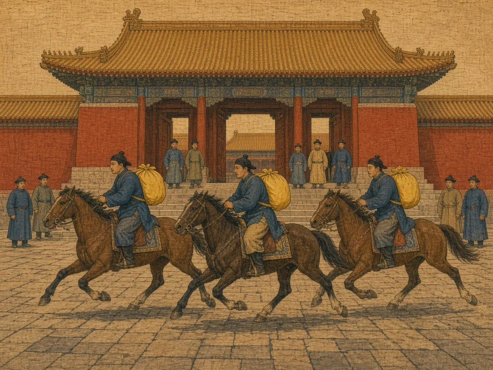
AI-generated illustration in a woodblock-print style, made for this deck: couriers gallop out of a Beijing palace gate carrying the emperor's reform decrees to the provinces in the summer of 1898. An interpretation, not a historical source.
In 1898 the young emperor invited Kang Youwei to court, and in June gave him a two-hour audience.
Over the next hundred days he issued more than one hundred decrees.
They covered the examinations, national schools, banking, the post, and patents.
Kang hoped for a constitutional monarchy, but the decrees stopped short of a constitution or parliament.
Sources: Ebrey, Ch. 18, p. 327; the dates and scope of the reforms (Kwong, 1984); the length of the audience (Kang, China Mail, 1898). Image: AI-generated illustration made for this deck.
Q10 story · Beijing · September 1898
After Three Months, Cixi Seized Power, Locked Up the Emperor, and Executed the Reformers She Caught
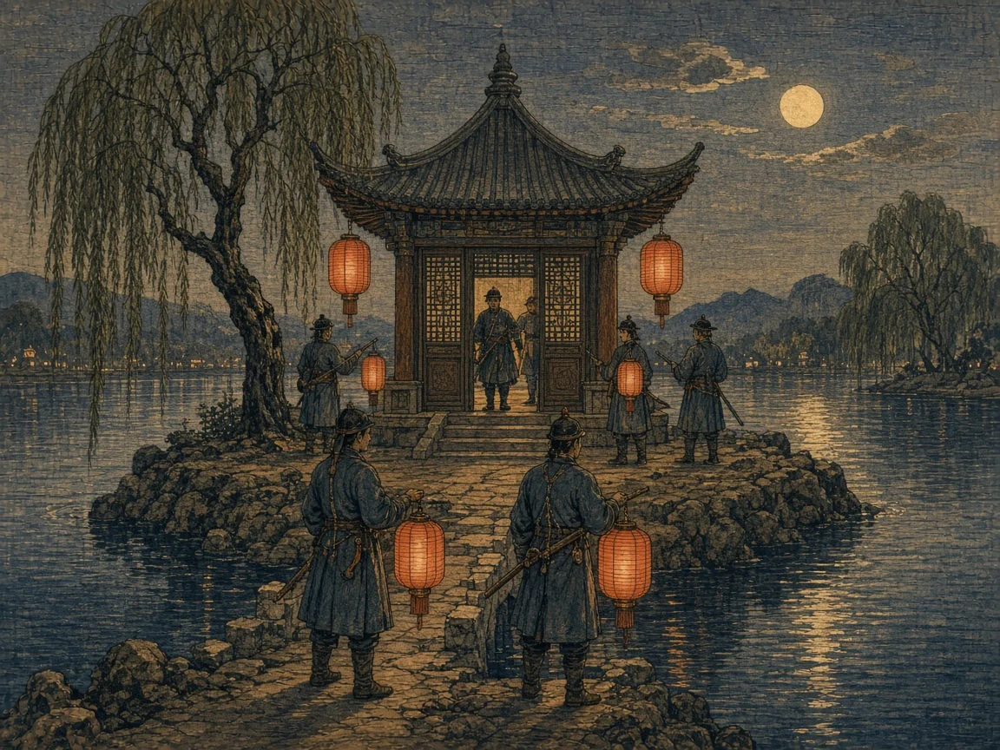
AI-generated illustration in a woodblock-print style, made for this deck: soldiers with lanterns guard a pavilion on an island in the palace lake at night, where the emperor was held after the coup; he is not shown. An interpretation, not a historical source.
Cixi took back power; when Yuan Shikai revealed a plan to use his army against her, it became a purge.
She had the Guangxu emperor locked up in the palace.
She executed six reformers and revoked most of the reform edicts.
Kang and his follower Liang Qichao escaped to Japan.
Sources: Ebrey, Ch. 18, pp. 327–328; the six executed reformers and the emperor's confinement (Kwong, 1984); Yuan Shikai's role (Mao, 2005). Image: AI-generated illustration made for this deck.
Story · Shandong · 1898–1899
In Shandong, Floods and High-Handed Missionaries Fed a New Movement: the Boxers
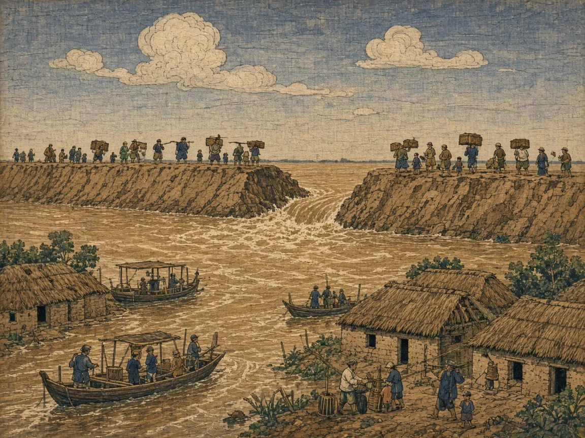
AI-generated illustration in a woodblock-print style, made for this deck: refugees crowd onto a broken Yellow River dike in Shandong in 1898 as floodwater pours through the gap and boats ferry families from half-sunk villages. An interpretation, not a historical source.
In 1898 the Yellow River broke its dikes in Shandong, flooding some two thousand villages.
Millions became refugees, and the government failed to provide effective relief.
German missionaries interfered in their converts' lawsuits, claiming extraterritoriality for them.
Converts were forbidden to pay for village festivals for the local gods.
Sources: Ebrey, Ch. 18, p. 328. Image: AI-generated illustration made for this deck.
Story · North China · 1899–1900
The Boxers Practiced Martial Arts and Spirit Possession and Called for Killing All Foreigners
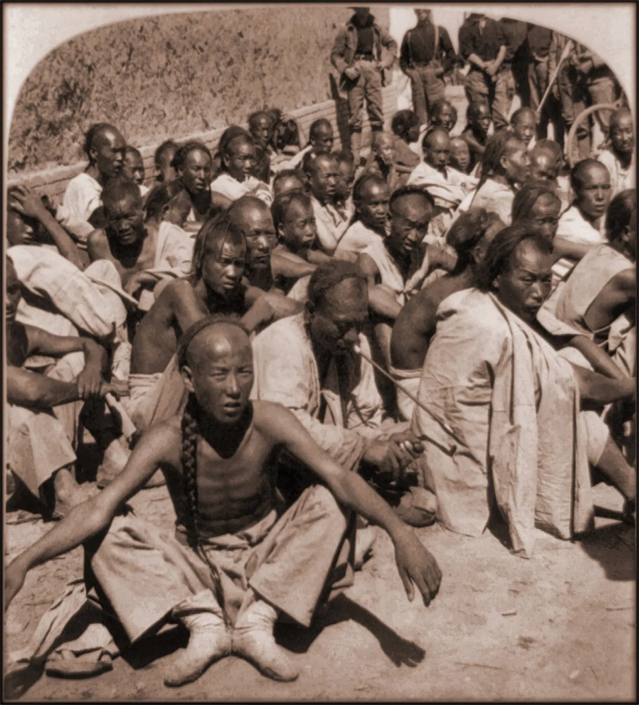
Captured Boxers at Tianjin, photographed by James Ricalton for a stereoscope series, 1900. Restored copy, CC BY 2.0, Wikimedia Commons.
Small groups began attacking the property of missionaries and their converts.
Foreigners called them Boxers because of their martial arts.
Through spirit possession, Boxers believed their gods entered them and gave them power.
Their placards urged Chinese to kill all foreigners and Chinese touched by foreign ways.
Sources: Ebrey, Ch. 18, pp. 328–330; the name "Righteous and Harmonious Fists" and the belief in invulnerability (Esherick, 1987). Image: James Ricalton, 1900.
Q10 story · Beijing · June–August 1900
Cixi Backed the Boxers, and Foreigners in Beijing Were Besieged for Eight Weeks
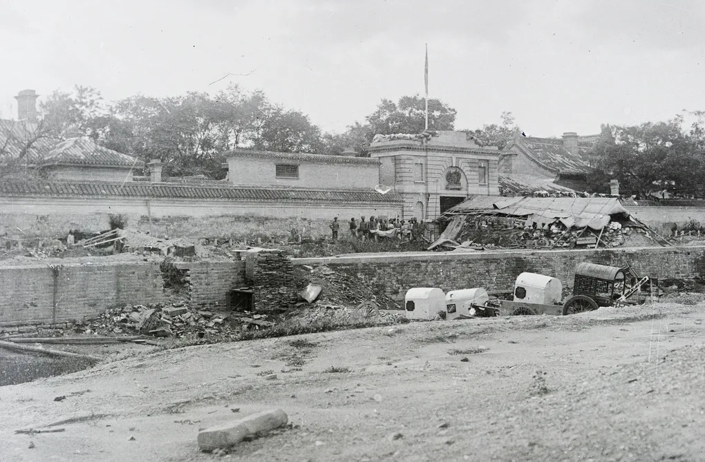
Sikh soldiers in front of the barricaded entrance to the British Legation in Beijing, August 1900. Photograph by C. A. Killie. University of Bristol, Historical Photographs of China. Public domain, Wikimedia Commons.
Cixi did little to stop the Boxers, hoping an aroused people might solve her foreign problem.
Pro-Boxer Manchus told her the powers wanted her to retire and restore the emperor.
After foreign troops seized the Dagu forts and the German minister was killed, she declared war on all eight powers.
Foreigners and Chinese Christians held out in the legation quarter and the Northern Cathedral.
Sources: Ebrey, Ch. 18, pp. 329–330; the siege dates and the Dagu forts (Esherick, 1987; Cohen, 1997). Image: C. A. Killie, 1900.
Story · Beijing and the north · August 1900–1901
An Eight-Nation Army Took Beijing, and Cixi and the Emperor Fled by Cart to Xi'an
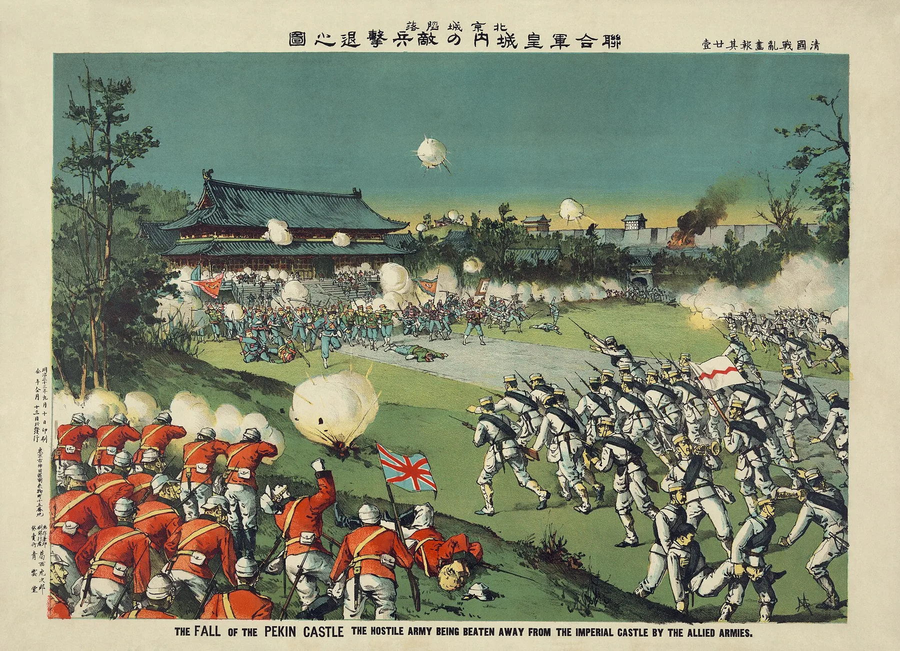
Foreign troops storming a gate of Beijing, August 1900, in a Japanese woodblock print by Kasai Torajirō, 1900. Public domain, Wikimedia Commons.
An eight-nation force, including Japan, sent twenty thousand troops to lift the siege.
Cixi and the emperor fled by cart to Xi'an, hundreds of miles away.
By the end of 1900, forty-five thousand foreign troops were in north China, raiding towns and villages for six months.
Most provincial leaders, including Li Hongzhang and Shandong's governor Yuan Shikai, ignored Cixi's declaration of war.
Sources: Ebrey, Ch. 18, p. 330; the southern governors-general and Russia in Manchuria (Hsü, 2000). Image: Kasai Torajirō, 1900.
Story · Beijing · September 1901
The Boxer Protocol of 1901 Imposed an Indemnity of 450 Million Taels of Silver
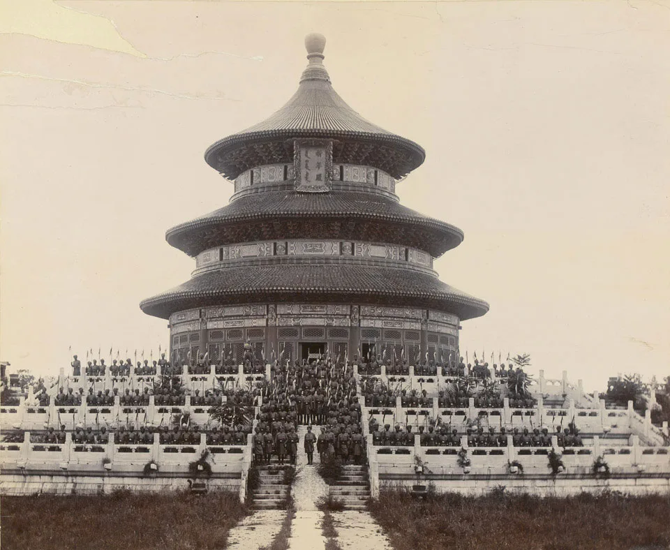
British Indian cavalry, the 16th Bengal Lancers, camped at the Temple of Heaven in Beijing, 1900. Public domain, Wikimedia Commons.
The examinations were suspended for five years in the places where foreigners had been killed.
Officials involved were executed, and forts and railway posts destroyed.
China had to pay a staggering indemnity of 450 million taels of silver.
Foreign troops camped even at the Temple of Heaven, where emperors prayed for the harvest.
Sources: Ebrey, Ch. 18, p. 330; the sum in taels, its payment over 39 years, and the local suspension of the examinations (Hsü, 2000). Image: 1900.
Coming up · Chapter 24
Next: A Civilization in Doubt Turned to Reform, and Then to Revolution
After 1901 even Cixi accepted reforms like those of 1898.
Students went to Japan, and new armies and schools spread.
Today's lecture ends here. Continue on your own: these short stories follow the new ideas and old problems that the Qing carried into the twentieth century.
"A little learning is a dang'rous thing; Drink deep, or taste not the Pierian spring."Alexander Pope, An Essay on Criticism, 1711
Pierian Spring · Story · Liang Qichao · 1890s–1900s
Liang Qichao Argued That China Needed Political and Cultural Change, Not Just Technology
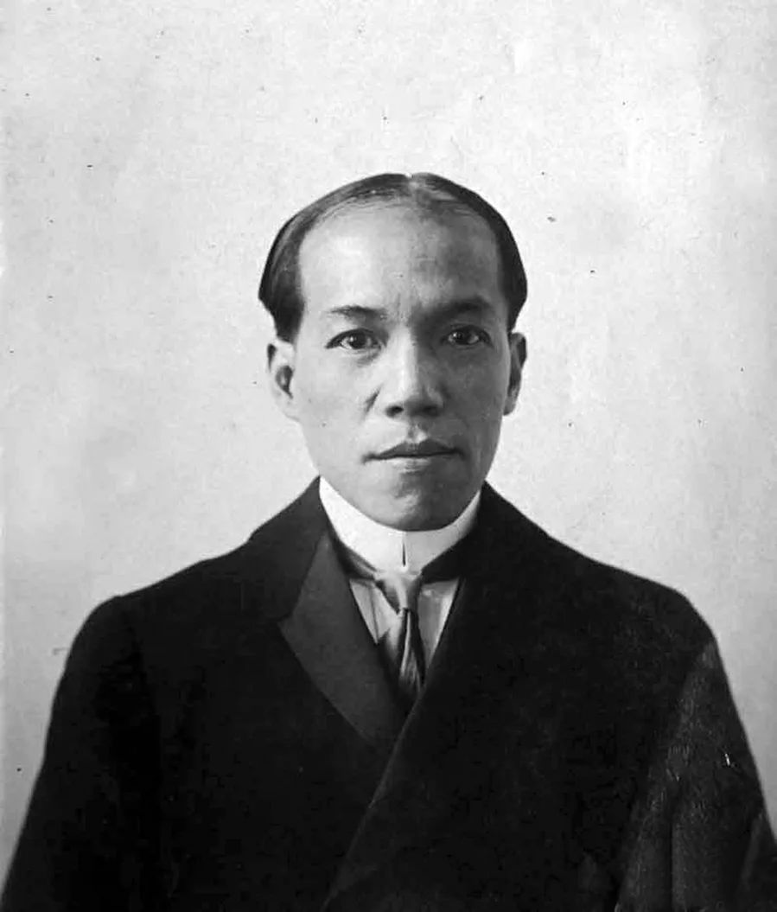
Liang Qichao (1873–1929), photographed in 1910 during his years in exile. Public domain, Wikimedia Commons.
Liang, Kang Youwei's most brilliant follower, went even further than Kang.
Self-strengthening, he said, had focused too narrowly on technology.
Scrap the examinations, build a national school system, and let the people take part in rule.
From 1895, study societies spread his ideas; Hunan alone founded fourteen.
Sources: Ebrey, Ch. 18, pp. 326–327; Liang's journals in Japan (Tang, 1996). Image: photograph, 1910.
Pierian Spring · Document · Mai Menghua, 1898
A Young Reformer Argued That China Was Weak Because Its Ruler Had Too Little Power, Not Too Much
Mai Menghua (1874–1915), a follower of Kang Youwei, wrote this essay at twenty-four.
Western states, he said, recorded every birth, taxed inheritances, and made every child go to school.
In China, the state could do none of these things.
"China's misfortunes arise not because the people have no power but because the ruler has no power."
Mai Menghua, 1898, as quoted in Ebrey, p. 328
Sources: Ebrey, Ch. 18, pp. 328–329 (Documents: Comparing the Power of China and Western Nations), from J. Mason Gentzler, Changing China (1977).
Pierian Spring · Story · The bannermen and the samurai
Japan's Samurai Found New Careers, but Many Qing Bannermen Could Not
The bannermen had been a hereditary military caste, in some ways like the samurai of Edo Japan · Ch. 16 L1 · banner-families ↗
When Japan abolished samurai status, many became officers or switched to skilled careers.
Many bannermen could not see how to survive without government stipends.
Many banner children were illiterate and unprepared for a modernizing country.
Sources: Ebrey, Ch. 18, pp. 326–327; Ch. 16 L1 for the banners.
Sources and image credits
The Stories in This Deck Rest on These Sources
Main source
Patricia Buckley Ebrey, A History of China, Chapter 18, "China in Decline (1800–1900)," pp. 322–330, 332. All page references in this deck are to these pages.
Woren, 1867, in Ssu-yü Teng and John K. Fairbank, China's Response to the West (1979), p. 76, as quoted in Ebrey, p. 323 (slide t). Kang Youwei, petition of 1895, in Philip A. Kuhn, Origins of the Modern Chinese State (2002), p. 123, as quoted in Ebrey, p. 327 (slide x).
Mai Menghua, 1898, in J. Mason Gentzler, Changing China (1977), as printed in Ebrey, pp. 328–329 (slide ii).
Further reading beyond Ebrey
Evelyn S. Rawski, The Last Emperors (1998) (slides c, e).
Gregory Smits, Visions of Ryukyu (1999) (slide h).
Lloyd E. Eastman, Throne and Mandarins: China's Search for a Policy during the Sino-French Controversy, 1880–1885 (1967) (slides i, j).
Bruce A. Elleman, Modern Chinese Warfare, 1795–1989 (2001) (slide j).
David C. Evans and Mark R. Peattie, Kaigun (1997) (slide m); Robert Bickers, The Scramble for China (2011) (slide p).
J. D. Frodsham, trans., The First Chinese Embassy to the West (1974) (slide u).
Huang Zhangjian, Wuxu bianfa shi yanjiu (1970); Mao Haijian, Wuxu bianfa shishi kao (2005) (slides x–z). Kang Youwei, interview, China Mail, 7 October 1898 (slide y).
S. C. M. Paine, The Sino-Japanese War of 1894–1895 (2003) (slides l–o).
Henri Meyer, "En Chine: le gâteau des rois et… des empereurs," Le Petit Journal, 16 January 1898 (slide p).
Immanuel C. Y. Hsü, The Rise of Modern China, 6th ed. (2000) (slides q, dd, ee).
Mary C. Wright, The Last Stand of Chinese Conservatism (1957) (slide t).
Luke S. K. Kwong, A Mosaic of the Hundred Days (1984) (slides y, z).
Joseph W. Esherick, The Origins of the Boxer Uprising (1987) (slides b, p, bb, cc); Paul A. Cohen, History in Three Keys (1997) (slides b, cc).
Xiaobing Tang, Global Space and the Nationalist Discourse of Modernity: The Historical Thinking of Liang Qichao (1996) (slide hh).
Images (real; via Wikimedia Commons unless noted)
a, e: Xunling, photographs of the Empress Dowager Cixi, about 1903. Freer Gallery of Art and Arthur M. Sackler Gallery Archives. Public domain.
b: Soldiers of the foreign forces at Tianjin, 1900, probably by Franz Scholz. Public domain.
d: Qing court portrait of the Guangxu emperor. Public domain.
g: Tōjō Kindai, map of the Qing empire and its tributaries, 1848. Public domain.
h: Charles-Édouard Hocquard, the Kinh Thien palace, Hanoi, 1884–1885. Public domain.
i, j: French engraving of the fleets on the Min River and French popular print of the bombardment of Fuzhou, 1884. Public domain.
l, m, n, dd: Japanese woodblock prints: the battle off Pungdo (1894); Fukushima Toshimitsu, the battle off the Yalu (1894); Migita Toshihide, the surrender at Weihaiwei (1895); Kasai Torajirō, the attack on Beijing (1900). Public domain.
o: The signing at Shimonoseki, Japanese painting, 1896. Public domain.
p: Henri Meyer, Le Petit Journal, 1898. Public domain.
u: Walter Goodman, Guo Songtao, 1877. Private collection. Public domain.
v: Ogawa Kazumasa, Li Hongzhang at Shimonoseki, 1895. Public domain.
x: Kang Youwei, about 1905. Los Angeles Times photographic archive, UCLA Library. CC BY 4.0.
bb: James Ricalton, captured Boxers at Tianjin, 1900; restored copy, CC BY 2.0.
cc: C. A. Killie, the British Legation, Beijing, August 1900. University of Bristol, Historical Photographs of China. Public domain.
ee: The 16th Bengal Lancers at the Temple of Heaven, 1900. Public domain.
hh: Liang Qichao, photograph, 1910. Public domain.
y, z, aa: AI-generated illustrations in a woodblock-print style, made for this deck. Interpretations, not historical sources.